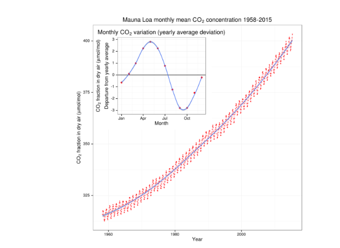
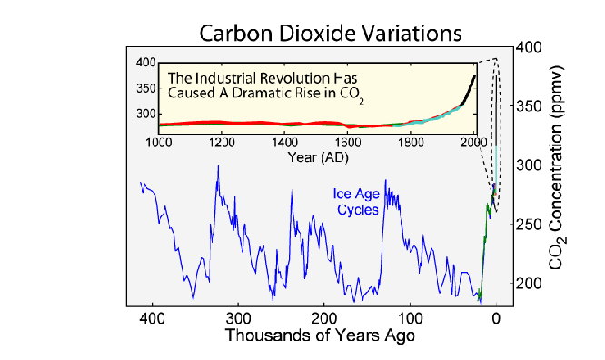
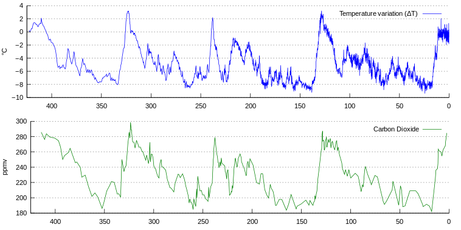
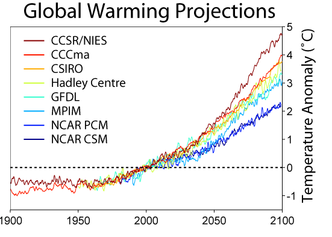
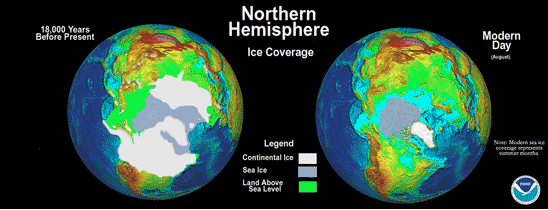
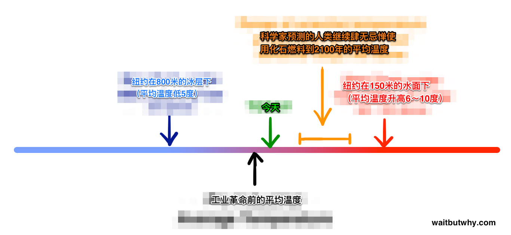
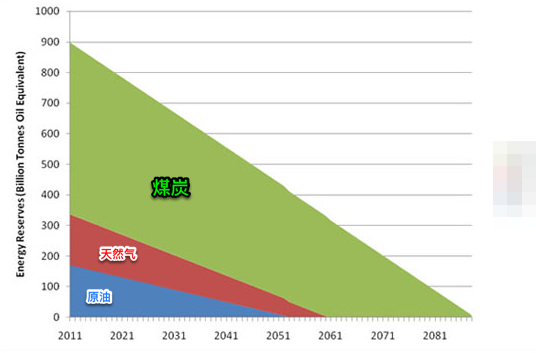
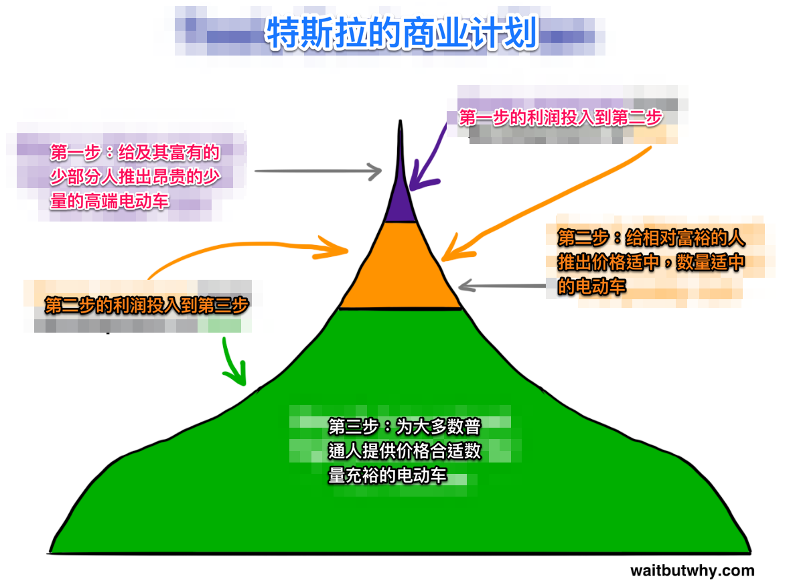
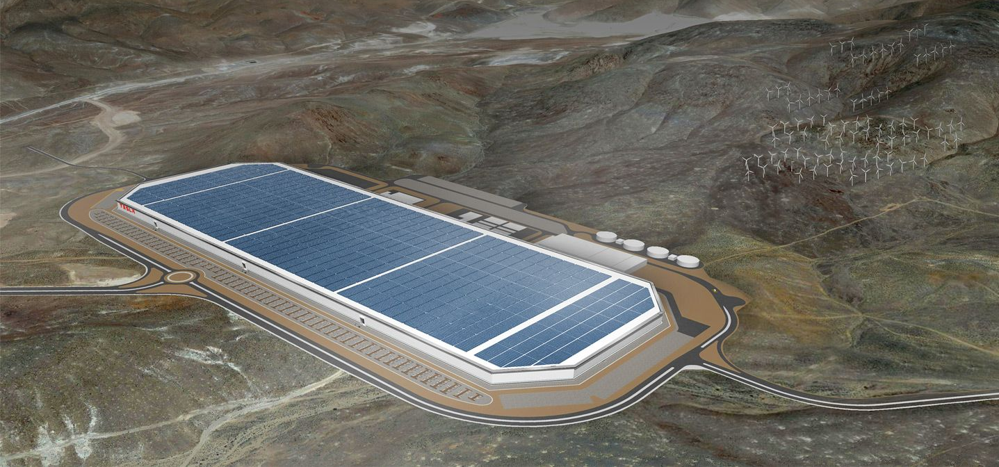

这几天，在路上陆陆续续见到了几次特斯拉Model X，看来特斯拉已经开始给早先定货的壕们发货了，再过两年，等Model 3出来的时候，说不定我们可以更加频繁的和特斯拉相遇。而且，随着其它厂商在新能源汽车领域的发力，相信不久的将来，会看到越来越多不带排气管的汽车行驶在道路上。
当然，很多人已经充分认可了电动车的发展趋势，也还有一部分人或许存在一些质疑，那么，今天我们就基于早先阅读相关资料所积累的知识和思路，来探讨一下为什么我们应该看好纯电动车吧。
我们的核心观点是：燃油车必将成为过去，混合动力车只是过渡产品，纯电动车才是最终的发展方向。
那么首先燃油车为什么必将成为过去呢？
答案很显然，就是因为它燃油呀！
我们把原因说得更明确一点，使用化石燃料作为能源所遭遇的问题和造成的影响已经日渐突出了。这当中最引人注目的是两点，一是气候变化，二是一次性化石燃料的枯竭。
关于气候变化，很多学者也持有不同的观点，但是以下三个事实基本上得到了普遍的认同。
化石燃料的燃烧使得大气中的二氧化碳含量上升。
相信大家都知道，植物在生长的时候，会通过光合作用来给自己制造养分。简单的看光合作用的过程就是植物从空气中获取二氧化碳，然后在光照的作用下，将二氧化碳中的碳元素提取出来生成有机物储存在体内，而把氧气作为废弃物排放出来。所以本质上看木头就是一堆储存着化学能量的碳。
那么当我们把一块木头点着的时候，发生的事情其实和光合作用是相反的。通常情况下，空气中的氧气只是在木头里的碳分子外面活动，所以正常情况下树木并不会自燃。但是当氧分子运动的足够快的时候会进入到木头中和碳结合，组成新的二氧化碳分子，同时释放出原本蕴含的能量，而蕴含的能量又使得周围的氧气分子加速运动，进一步和其它的碳结合，从而生成更多的二氧化碳释放出更多的能量，这是一个连锁反应，这个时候我们从外部看就是这块木头被点着了。所以一块木头燃烧的过程看上去和光合作用是相反的，它会吸引空气中的氧气，排放出二氧化碳。
当然，早期人们在这个过程中并不关心排放出来的气体是什么，我们只在乎可以通过这个过程得到我们想要的光和热。一棵树经过多年的成长从大阳获取的能量在它被点着的那一刻被一瞬间的重新释放出来。换句话说，光合作用像是绑架了空气中的碳原子和太阳能，经过很多年之后，当它被点燃时，碳原子和太阳光能都得到了自由，碳重新变会了二氧化碳，而太阳能则变成了火。
由此可见，燃烧木头并不会改变空气中的碳含量，因为从一开始这些碳就是树木从空气中获取的，燃烧只不过是一个重新将其释放出来的过程。碳从大气进入植物体内，燃烧变成二氧化碳重新回到空气中，烧成灰进入土地和水中，这个过程称为碳循环。在任何给定的时间，地球上的碳循环中所有的碳的总量是不变的，燃烧一块木头并不会改变碳的含量，只是把它从一种形式变成了另一种形式。
但是有些时候在循环的过程中碳会有所缺失，就是当植物和动物死亡之后没有得到正常的分解，他们体内继续留在了这些碳和能量，被一直埋藏在地底。随着时间的推移，日积月累的这些埋藏着的碳越来越多，到今天为止，所发现的这些化石燃料当中就包含了亿万年来所积累的这些从原先的碳循环过程中偷跑出来的碳。
当人们发现这些地底的碳的时候，我们的眼光并没有停留在碳上，而是将重点放在了燃烧它们所能释放的能量上，积累了亿万年的能量，多么让人兴奋和无法抗拒。当我们释放出当中的巨大能量，在我们的日常生产生活中被转换为电能，机械能等等可以提高我们生活品质的能量的同时，当中蕴含的碳也被不断的排放出来。
1958年科学家Charles Keeling开始在夏威夷冒纳罗亚火山观测站测量大气二氧化碳水平，这些测量至今仍在进行，下面是他们的一些观测结果：

我们可以明显的看出二氧化碳在空气中的含量随着时间在变化呈现明显的上升趋势，之所以会以实际中红颜色的折线图所表示的那样上下来回的摆动，是由于这个数据是具体到月份的，而空气中的二氧化碳含量在不同的季节是不同的，主要原因是测量地点植物是以落叶植物为主，春夏时节枝繁叶茂的时候空气中的二氧化碳含量会偏少一点，秋冬时节叶子都落光了自然光合作用也少了，那么空气中的二氧化碳含量就上升了。通过相关技术科学家们还收集到了过去40万年间的二氧化碳含量的变化，下面这幅图是他们的发现：

可以明显的看出，在过去的很长一段时间，二氧化碳含量都在180至300之间，几乎不会超过300，但是近年来突然间上升，已经接近400。因此目前的大气环境中，碳含量已经不再是以前稳定的0.02%至0.03%左右了，而是0.04%，并且有继续上升的趋势。我们这里不去轻易的下其它的判断，只要知道一个事实就可以了，就是空气中二氧化碳的含量水平上升的很快。
随着二氧化碳含量的上升，气温也随之升高。
科学家们获取的不仅仅是二氧化碳含量的变化数据，同样的也获得了温度变化的数据，下图是他们的发现：

从图上不难看出空气中的碳含量和温度存在一定的相关性。原因很简单，二氧化碳是一种温室气体。温室的原理是让阳光照射进来并留住其中的热量。在我们的大气中有很多元素都起着类似这样的作用，吸引并保留太阳的热量。
火星的平均温度是零下55摄氏度，看上去很糟糕，但是金星的平均温度更是地狱般糟糕，达到了462度。这并不仅仅是因为金星离太阳更近，而很大程度是取决于这些行星在大气层，火星的大气层相对稀薄，所以热量很容易散失，而金星的大气层相对厚实，特别是二氧化碳的含量比地球高300多倍，所以对热量的保留起到了很大的作用，因此即便是水星离太阳更近，但是由于大气稀薄，它的平均温度低于金星。在白天的时候，水星和金星差不多都非常的炎热，但是到了晚上水星会相对的很快的冷却下来，而金星的热量被像棉被似的大气层保留了下来。
所以空气中二氧化碳的含量对温度是有影响的，那么这样的影响到底有多大呢？相对于工业革命之前的平均温度，我们目前的温度上升了一度左右，大多数科学家预测温度还将继续上升。由1300多名来自不同国家的独立科学家组成的联合国的政府间气候变化专门委会所支持的一些独立的气温保护的实验机构对于未来的气温变化作了分别的预测，如果不采取任何措施，地球的平均气温会如何变化：

政府间气候变化委员会认为二氧化碳含量和温度的变化90%都是由于人类活动的原因造成的，接下来我们的问题实际上是想要知道温度要变化多少才会对气候造成严重影响，以至于使我们的世界变得糟糕呢？
气温只需要很小的变化对气候就会造成很大的影响，世界可能就会完蛋。
差不多1.8万年前，世界的平均温度要比现在低5度左右，就这5度已经足以让加拿大，英国和美国的一半被覆盖在半英里厚的冰面下。

1亿年前，那时候地球的温度差不多比现在还要高6-10度，那时候地球上几乎到处都是热带，没有地方有常年不融化的冰川，海平面差不多要比现在高200米，地球上生活着下面这货：
所以我们现在所生活的还算不错的环境其实是一个很敏感的小窗口：

而实际上这样的敏感程度比我们在上面这幅图上看到的要脆弱的多。因为平均温度的微小变化在某一点的最高或最低温可能已经有了很大的变化。而如果某一天某一地方的最高温度可以达到58度，那基本上现有的动植物都无法生存。另一方面温度能变化的区间实际上是挺大的，我们已知的绝对零度是零下273度，所以那些使几乎整个半球都冰冻住的5度的温度变化用百分比来衡量并不是10%，而只是1.5%左右的变化。所以下面这幅图或许更直观：
那么我们应该怎么做呢？我们要做的并不是在上述这些观点之间进行深入研究或是开展辩论以求找到真相，因为对于未来没有人可以保证可以做出准确的预测。我们在这里也不谈具体的影响，比如海平面上升，污染增加，风暴增多，北极熊灭绝等，我们只想把上面提到的三点事实结合起来看一看我们的世界正在发生什么：
化石燃料的燃烧使得大气中的二氧化碳含量上升。
随着二氧化碳含量的上升，气温也随之升高。
气温只需要很小的变化对气候就会造成很大的影响，世界可能就会完蛋。
结论就是：如果我们肆无忌惮的使用化石燃料，我们的世界很快就会完蛋了。
知道了这一点之后，我们接下来再来聊一聊关于化石燃料的第二个问题：化石燃料是会耗尽的。
曾经很长一段时间我认为这些埋藏在地底或海底的化石燃料是取之不尽用之不竭的，正如19世纪人们刚刚发现这些燃料一样，而现在一些人还是这么认为的，毕竟我们还无法想象在茫茫大洋底下还有少未勘探出来的储备。但是实际上，地球上的化石燃料是会枯竭的，而且距离它们被消耗完的日子并不是太久远。
正如下面这幅可以在一些新闻报道中被引用的示意图那样，可以看出，以2013年为起点，煤炭还有113年就用尽了，天然气还有55年，石油还有53年。
下面这个图表是援引美国中情局关于世界概况的描述，实际上在石油和天然气耗尽之后，煤炭的使用会巨增，从而撑不到113年。

有一些别的网站的观点是这些对于化石燃料还能使用多久的预测都是基于目前已经探明的储量，而实际上我们每年还会发现新的化石燃料来源，比如在海床下的沥青沙或甲烷水合物中所蕴含的石油，我们会开发出新的技术来获取这些石油，这样来算几个世纪之后也不会用尽。即便是全球的化石燃料的总储量是有限的，我们对剩下的燃料的开采和利用也会变得越来越困难，所需要投入的成本也会越来越高，所以最终也无法用尽那些最后的燃料。
这些能源物质耗尽所带来的问题就是如果那个时候我们的社会还是高度的依赖这些能源，那么整个社会经济的崩塌将不可避免，物价会飞涨，而到那时我们再来开发新的可再生能源或许为时已晚。所以我们最好在这些不可再生的化石能源被耗尽之前想到更好的办法。
在不久或很久的将来，由于化石燃料的枯竭我们别无选择，只能停止目前基于这些能源的一切社会活动世界将会怎么样？我们这代人所生活的纪元会被后人看作是「化石燃料纪元」。
根据第一个问题的结论，如果我们继续肆无忌惮的使用化石燃料，世界很快就会完蛋。 我们将在图中黑的部分停留很长的时间直到能源耗尽，而那个时候我们留给后人的或许已经不是图上这么广阔的黄颜色的部分了，他们能不能得到一个世界都成问题。
想方设法延长化石燃料时期，将会是人类历史上做的最愚蠢的事情。更多更大的这种化学反应会对我们的大气和海洋造成更深远的影响，既然我们知道这种化石燃料终有用尽的一天，而使用它们对我们的环境所造成的是恶劣的影响，我们为什么一定要等到它们都用完了环境都已经变得很差了才停止呢？
也就是说，回到上面这个示意图，我们知道自己在这个黑色的区域，而如果我们继续研究开发这些化石能源，我们在黑色区域里呆的时间会越长，而同时对黄色区域的影响越大，甚至黄色区域根本就无法到来，那么我们为什么不主动一点尽快的进入黄色的区域呢？
因此，从能源的角度来看，燃油车势必会被历史所淘汰。
而实际上从汽车本身的历史来看，早在汽车诞生之初，燃油车就并不是独宠儿，一开始燃油车和电动车是并存过一段时间的。只是后来以福特为代表的企业，把燃油车先改进成了人们日常生活能接受的样子。
福特致力于推广燃油汽车，这项技术在当时并不是很普遍。汽车本身就是个新兴事物，在那时的美国市场40%的汽车是蒸汽驱动的，38%是电力驱动的，而燃油驱动的仅有22%。这个占比在当时是可以理解的，毕竟基于蒸汽机的外燃机来提供动力在当时已经是一个比较成熟和广为接受的最常见的技术，而新兴的内燃机技术正在逐渐的兴起，但是发展最快的还是电动车，可以想象在1900年「电」是一个多么先进的技术。
所以如果让1900年的人们打赌未来什么样的汽车动力是趋势，在外燃机，内燃机和电动机之间选择，他们一定会把钱押在电动机上。当时世界上的著名发明家包括爱迪生和特斯拉等人都十分看好电动汽车，在20世纪初，纽约时报也曾经援引相关报道称电动车比普通使用汽油的汽车更清洁更安静和更经济。
但是人们对于电动车的这种期盼并不能驱动当时的汽车工业。汽车在当时只不过类似于富人的工具。他们认为首先应该着眼于让汽车变得更快，更坚固和更经济。于是当时的资本和技术都在朝着这样的方向努力着。1908年，在福特和他的公司成立五年后，他们推出了革命性的产品，Model T。
在Model T诞生之前，所有的汽车不论是电动的还是燃油的都存在着严重的缺陷。电动车的行驶里程短而且充电所需要的时间长(这个问题貌似到现在也还依然存在)，燃油车噪声很响，不容易发动，而且排放出大量的黑色废气。
福特通过改进生产制造流程，引入了生产线的加工方式来代替传统的手工制造，使得汽车的制造成本大幅降低，从而生产出了普通老百姓也可以接受的汽车。1912年工程师Charles Kettering发明了电动起动装置，人们再也不需要像个呆逼似的用手摇的方式来发动汽车了，而新发明的消声器可以显著的降低燃油车的噪音。基于这些改进，之前提到的燃油车的问题几乎都得到了比较完美的解决，而且比电动车还便宜好多。于是福特的Model T迅速攻占了美国市场，到1914年的时候，美国99%的汽车都是燃油车，到1920年的时候人们就几乎见不到电动车了。
福特当时所做的这些只不过是通过技术手段和商业运作在一定程度上规避了燃油车表面上的缺点并降低成本从而可以使得其快速的占领市场而得到普及，而电动车的发展仍然处于瓶颈期，一直以来停滞不前。
转眼一个世纪过去了，方便快捷的智能手机已经取代了原先的有线电话，皮克斯公司所擅长的高仿真3D电影已经取代了原先的无声黑白电影，科学家们从原始的在实验室里进行简单的物理化学实验发展出了今天的大型原子对撞机，莱特兄弟12秒120英尺的飞行现如今已经发展为远在250英里外的国际空间站。

相比上面提到的科技在其它领域的发展，燃油机的这种运作方式实在是太原始了。于是随着人们越来越重视气候问题，对燃油车的改进也显然遭遇了瓶颈，人们又开始把眼光投向了各种新能源汽车。
目前我们所说的新能源汽车主要有以下几种：
混合动力车，同时拥有内燃机和电动机，这种混合动力车不会通过燃烧汽油给电池充电。这种车的电池通过一种叫作再生制动或反馈制动的装置进行充电。我们都知道汽车在运用时所需要的动能是通过内燃机或电动机产生的能量转换而来，而在汽车刹车制动时，这部分能量往往转换成热能，通过这种再生制动装置可以实现将制动时的能量重新转换成电能充回电池。这种类似于能量回收的方法，可以有效的降低汽车的油耗和废气排放，可以说混合动力车的出现是人类在新能源汽车上迈出的一大步。
但是这仅仅是帮助降低碳排放的一种方法，距离我们要真正的完全解决排放问题还很远，因为这种汽车仍然需要燃油。就算全世界100%的汽车都是这样的混合动力车，对燃油的依赖仍然是100%。
插电式混合动力车，是一种相比上面的普通混合动力车更好的选择。人们可以在家里给电池充电，然后依靠纯电力行驶10到40英里左右之后才需要内燃机的介入。虽然纯电力的行驶距离不远，但是也能满足一部分人日常出行或是通勤的需求了，意味着有些人几乎可以不使用燃油。既然我们都可以做到纯电力的方式，我们为什么不改进它让它可以行驶得更远呢？
氢气车，这种车子不太常见，其实它也是一种纯电动车，但是它不需要使用电池。而是像燃油车一样需要燃料，只不过这种车的燃料是压缩氢，通过和氧气反应产生能量转换成电能给汽车提供动力，这种反应不会产生废气，因为氢气和氧气的化合物是干净的水，听上去非常不错是吧？
但是相比于纯电动车而言氢气车有以下几点严重的不足：
1) 氢气仍然需要从天燃气或别的化石燃料中提取，而电动车的电力来源可以随着发电方式更加清洁而变得越来越清洁。
2) 具体到能量利用，行驶距离和成本，氢气车或许可以达到目前的汽车的水平，但是电动车随着电池技术的提高，未来的发展空间将会更大。
3) 氢气是一种极不稳定的气体，其使用的危险程度比在家里插个插头就能充电的电动车要高很多数量级。
4) 当大家都在自家车库给汽车充电的时候，你还要去加油站充氢气显得多么的老土。
如果我们把电力从太阳能电池板里提取出来给电池充电，这样的效率可以高达90%，既简单又便宜。然而如果我们通过电力分解水成氧气和氢气，然后还要疯狂的压缩氢气甚至使其液化，然后把他充到汽车的储存罐里，最后和氧气反应来发生电力，这当中如果幸运的话可以达到20%的效率，又贵，又复杂，效率又低。能量在复杂步骤的每一步都有流失。
纯电动车。这种车的原理很简单，都有一个大容量的电池，我们需要做的就是给电池充电，而不需要添加别的任何的燃料。
电动机在很多方面都比燃油机方便。燃油车每隔一段时间就必须去加油站加油，而电动车主每天只需要像给手机充电一样的给汽车充电就可以了。而在内部结构上燃油机比电动机要复杂许多，燃油机有超过200个部件，而电动机不到10个。燃油车需要有变速器，排气管，齿轮等复杂装置，而电动车不需要，打开电动车的引擎盖，你得到的是一个很大的储物空间。在结构上的复杂意味着燃油车所需要的维护和保养成本要远高于电动车。
电动机的养护和使用成本要远远低于燃油机。除了燃油车的燃料汽油要比电动车的”燃料”电要贵很多以外，燃油车主还不得不花费相当的资金在更换机油和汽车保养上，让我们来简单的算一算。
电动车平均每度电可以行驶6公里，以上海的平均电价0.6元一度来计算，那么意味着每公里的驾驶成本是1毛钱。燃油车的驾驶成本相对就要难算一点，因为油价会一直变化而不同车型的油耗也存在较大的差异。让我们假设油价是6块钱一升，那么要达到1毛钱1公里的驾驶成本，我们需要每升油可以行驶60公里，也就是每百公里1.66个油，几乎很少有车可以达到这个油耗吧？那么我们常规的来看如果油价6块钱一升，油耗是每百公里7个油，那么每公里的成本 是0.42元。如果一年行驶1.5万公里，燃油车每年要比电动车多花费将近5000元。
既然这么划算，电动车却还没有普及的主要原因是以下两个。行驶在路上是否可以方便的充电？纯电动车的价格普通人是否都能承受的起？
1)行驶里程问题。
这是最亟需解决的问题，它涉及到以下几个方面
A) 电池的容量是否太小，寿命是否太短，以至于无法支持长距离的行驶？
B) 如果驾驶着电动车在路上没电了，是否可以方便的找到充电的地方？
C) 即使找到了充电的地方，是否需要好几个小时来等待汽车充好?
这些问题都是潜在的电动车购买者所关心的最主要问题。
2)价格问题。
在一开始的时候，电动车就比燃油车要贵，主要是贵在电池成本上。
那么我们如何解决行驶里程，包括旅途充电问题呢？
就目前来看，单次充电300公里以上的行驶里程基本上可以满足人们的日常出行需求，即使是比较忙碌的日子，一天开300公里也差不多够了，但是对于长途的驾驶需要到周边来个自驾游啥的就显的不太够了，普通燃油车可以在到处都有的加油站补充燃料，而电动车应该怎么办呢。
我们可以构建全球能源网络。像特斯拉那样提供超级充电桩，可以给电动汽车快速充电，可以像加油站那样遍布在道路网络中。现在如果是在自家车库中给特斯拉Model S充电要5到10小时(取决于购买的车型是两驱还是四驱)。很明显，没有人会希望在旅途中停下来这么多小时等待充电，一般燃油车只需要几分钟就可以补充燃油了。因此超级充电桩的充电速度比家里要快许多。对于Model S来说，使用超级充电桩充电10分钟可以行驶100公里。所以你是从上海驾车到南京，差不多有330公里，基本上需要在路上进行充电，即便要充，10分钟肯定就够了。如果是从上海到青岛，差不多有700多公里，那么当中可能需要停下来充电20到30分钟。
事实上人们驾车从上海到真就有四个小时左右的路程，当中很有可能会停下来几分钟休息休息，而从上海到青岛则有六七个小时在路上，则更加需要20-30分钟来整顿整顿，上上厕所，买点吃的什么的。
所以对于现在特斯拉的单次充电行驶量程来说已经不是什么严重的问题了。所需要做的就是在道路周边尽可能的多放一些超级充电桩，让给电动车充电和加油一样方便就可以了。
关于超级弃电桩还有几点值得一提的地方，就是他们完全是免费的，而且不久的将来他们将完全是通过太阳能发电的。另外我们还可以推出了更快的超级充电方式，就是电池更换。电动车主只需要将车停在特定的区域，地下就会有机器自动的更换电池，整个过程只需要90秒，这种服务的价格是要高一些的，但是你起码可以选择用金钱换时间。
所以行驶里程的问题和旅途充电问题看上去已经或者马上会得到完美的解决了。我们再来看看价格问题。
在汽车行业里有个经验法则，就是价格每便宜5000美金差不多可以承受的人群就会增长一倍。我们以特斯拉为例来看，如果特斯拉出的车可以比Models S便宜3.5万美金，面对的受众就可以连着翻七番，或者说是128倍，这意味着大多数人都可以买的起了。让我们可以看一下之特斯拉的商业计划。

可见第三步才是特斯拉最终想要实现的目标。
这款车型是Model 3，预计将在2017年发布。而且，在享受了免税补贴这后的价格会在2.75万到3.5万美金之间，如果再算上省下来的燃油费，成本只需要2万美金。但是如何实现呢？现在光是Model 3的电池成本就已经达到了2万美金，即使Model 3车型比Model S小，也不采用全铝合金车身，也不采用那些Model S所具有的高科技功能，单从电池成本看，售价3.5万美金也不太可能。
为了解决价格问题，特斯拉建造了下面这货：

马斯克给它起名为Gigafactory。是一个建在内华达州的五十亿锂电池工厂。这个工厂的能源完全自给自足，能源主要来自太阳能，风能和地热能。目前全球锂电池的产量差不多是30GWh，且大多数是用在笔记本电脑和手机终端上。而这个Gigafactory每年生产的锂电池将超过每年全球的产量之和，也就是说它将直接使得全球锂电池的产量增加一倍。这会带来两大好处：
首先根据特斯拉的计划，他们的电动车出货量将达到每年50万辆，这会从根本上需要大量的锂电池。援引马斯克的说法：我们知道我们无法获取到足够的锂电池，除非我们建成了这个造血工厂，我们也知道没有其它人会建造这样的工厂。数据让需求显得十分的明显，为了给每年50万辆特斯拉提供电池，需要差不多30GWh的产量，也正好是现在一年的全球产量，如果没有Gigafactory，意味着要把全球所有的锂电池都用在特斯拉上才够。现在的设想是Gigafactory完全给特斯拉提供电池，如果随着日后其它汽车厂商陆续推出各家自己的电动车，这些汽车厂商或许也会建造自己的Gigafactoies。
其次，通过使的全球锂电池产量的翻倍，以及在锂电池行业持续的创新和改进，Gigafactory的作用会大大降低锂电池的成本。马斯克预计锂电池的价格至少会降低30%，实际上目前特斯拉已经可以生产出单次行驶里程在500英里的汽车，但是出于成本的考虑并没有投入生产，但是随着电池成本的降低，未来电动车的行驶里程也会随之提高。
尽管如此，还是有其他一些质疑电动车的声音，我们在这里也可以快速的一一澄清：
质疑一：电动车的电池处理是又一个环境问题
事实：A)电动车所采用的锂电池是安全的和可降解的。B)这些电池是可回收的。C)电池会被持续不断的回收，对于二手车来说电池还依然有一定的价值，起码还可以作为原料。
质疑二：特斯拉的制造过程比生产其它很多汽车更不环保
事实：越贵的汽车其生产和制造工艺越复杂，其过程中所产生的能耗等环境影响也越大。可以说生产Prius比生产Golf更不环保，但是如果是同等价位的车来比较事实就不是这样的了。特斯拉并没有比同等价位的豪华车更不环保。
质疑三: 电动车会给现有电网带来巨大的负担。
事实：电网的设计总是基于最坏的情况作打算的，所以平常的负荷基本上是过载的。我们可以把全美国70%的车都换成电动车，对现有的电网也没有什么影响。而当越来越多的太阳能电板投入使用之后，带来的影响则会更小。
质疑四：特斯拉在电池里使用了大量的石墨，给中国造成了很严重的污染。
事实：这里的内在逻辑是特斯拉在电池中使用了大量的石墨，中国是世界上最大的石墨出口国，中国被严重的污染了，所以特斯拉的电池造成了中国的污染。不过实际上特斯拉所有的石墨主要来自于日本和波兰，每辆Model S平均需要100公斤的石墨，但是这100公斤石墨可以用10年，所以基本上这个数量和你每年烧烤几次的消耗量是差不多的。
质疑五： 发展电动车的整个背后的原因都是骗人的，因为电主要来源于煤炭，有报告显示用电比直接用内燃机实际上带来的污染更严重
事实：
1)电力来源是混合的，并不是单一的煤炭。以美国为例，煤炭只占39%的电力来源，而且这个占比还在下降：
2)发电对能源的利用效率比内燃机要高出很多。
我们以理想的能源天然气为例，在发电过程中有60%的能量可以被转化为电力，丢失40%，而在内燃机中直接燃烧，只有25%会转化为动力。而且对于损失的热能的回收和利用大型发电厂肯定比一台汽车要做的更好。这种效率的差别意味着就算电力完全来源于煤炭，电动车所产生的碳排放和每升能跑15公里的燃油车相当，而大多数燃油车是做不到这一点的，所以电动车已经比普通燃油车更清洁了。
最后总结一下价格合适的高品质长距离电动车相比燃油车，会拥有以下几点让人无法拒绝的优势：
更好的驱动。电动车的即时扭矩就像出膛的子弹一般。从你脚踩油门踏板到汽车起动之间没有任何的时间延迟。不需要变速箱，电动车的加速是线性的，这样的操作体验无法想象，这一切都是无声的安静的。
更方便。不需要停下来加油，不需要定期的保养，不需要更换机油。有更多的储物空间因为我们不需要发动机，发动机箱变成了前备箱。
更安全。由于没有引擎，整个车身的前面都可以做成缓冲区。这也正是为什么Model S在安全性评估上可以达到超高分的原因之一。
更经济。不需要燃油和不需要保养可以省下来很大一部分日常开销，不用担心汽油的涨价。
更健康。少了汽车尾气的排放，空气质量将得到显著提高。
大局上还避免了全球环境，经济和地缘政治的一些问题。
由此可见，我们没有理由不看好电动车，不仅仅是因为国家的大力推广、政策扶持和各种补贴，而是从根本上看，电动汽车的普及是必然的趋势。
而且，更进一步的是，我们设想将来的世界会是这样的：
1)我们几乎所有的东西都基于电力运行。
2)所有的电力都来源于可再生能源。